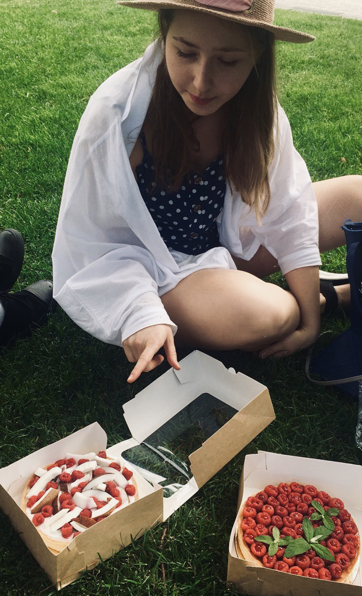

ОБО МНЕ И ДЕЛЕ МОЕЙ МЕЧТЫ
Итак, всего 4 года назад студентка социологического факультета ВШЭ по имени Софи была так же далека от мира кондитерского искусства, как далека сейчас от продолжения обучения на том самом соцфаке. Софи – это я, и хотя мне с детства нравилось помогать маме с готовкой домашних десертов, мое желание никогда не дотягивало до приготовления чего-то интересного без повода или до блюда со сложным составом ингредиентов. Сейчас я время от времени задумываюсь над тем, как же в итоге свершилась эта любовь с кондитеркой и приготовлением еды в целом, и каждый раз мыслями возвращаюсь на первый курс универа.
Я поступила в Вышку на факультете социологии, совершенно не понимая, чем я хочу заниматься и кем быть в этой жизни. Мне казалось, что будет интересно изучать общество, знать, чего оно хочет, и в целом так оно и было. Процесс обучения был весьма увлекательным, но этого было недостаточно. Уже на первом курсе я четко осознавала, что я готова изучать социологию, но работать социологом я не хочу. Временами на такое осознание накладывалась еще и сильная усталость от трудной учебы и нервная сессионная обстановка, и, может, поэтому я начла кулинарить сладкое по выходным – придумала себе этакий способ отвлечься и получить дозу гормончиков радости. 
Я готовила все чаще и совершенствовала навыки методом порчи продуктов и «начнем заново!». В определенный момент, когда времени на готовку не находилось, я понимала, что у меня уже ломка по духовке и планетарному миксеру, который подарил мне папа! Родным и друзьям нравились мои десерты, это меня очень подбадривало, и со временем я решилась на изготовление тортов на заказ. По бо́льшей части я занималась так называемыми «celebration cakes» в американском стиле – это довольно высокие круглые торы, с чередующимися слоями бисквита, крема с творожным сыром и какой-то начинкой. Думаю, ты себе отлично представляешь эти торты, так как они весьма популярны и большинство домашних кондитеров делают упор именно на них. И хотя сейчас такой формат является для меня уже пройденным этапом и мои интересы ушли в другую сторону, я понимаю, что это был очень важный опыт, так как именно благодаря ему я начала более серьезно относиться к своему увлечению и воспринимать его как нечто чуть большее, чем хобби.
К концу третьего курса пора было уже задумываться над тем, буду ли я продолжать учиться где-то, когда закончу университет. Я начинала гуглить кулинарные школы, понимала, что в России нет ничего подходящего, и конечно же первом делом прочитала про Le Cordon Bleu (далее LCB) – альма-матер известных шефов крутых ресторанов, голубую мечту поваров и кондитеров. Я прочитала, глаза загорелись, но я в своем духе подумала: «Ну не, слишком уж круто». И буквально через пару месяцев внезапно в Москву приезжает шеф из парижской кампуса LCB с бесплатным мастер-классом, да еще и проходящим в Турандоте! Быстро зарегистрировалась, взяла маму под руку и побежала в сторону Тверского бульвара! Не буду тянуть и лишь поблагодарю родителей за открывшиеся передо мной возможности и поддержку моих кулинарных порывов: через месяц после того самого мастер-класса мама с папой уже махали мне ручками с другой стороны паспортного контроля в аэропорту, а я шла искать свой гейт – я отправлялась в мадридский кампус Le Cordon Bleu!
За летние каникулы я успела пройти базовую, первую из трех ступеней курса по кондитерскому делу и вернулась в Москву, чтобы доучиться в вузе. Сейчас кажется, что я успешно окончила универ только благодаря постоянной мысли о том, что после я уеду в LCB и там полностью отдамся любимому делу. И это свершилось! Во время учебы в самой известной в мире кулинарной школе я успела побывать в лондонском кампусе и вернуться в Мадрид, поучиться у 12 талантливых шефов, получить опыт работы и в команде, и в условиях «каждый сам за себя», а самое главное – окончательно влюбиться в кондитерское искусство. Я могу бесконечно рассказывать о школе, так как запас эмоций, связанных с ней неисчерпаем.
Здесь я написала отдельный пост, где постаралась уместить ту информацию об обучении в LCB, которая будет максимально полезна для тебя и значима для меня. Это был опыт, который раньше я не могла даже представить как часть свей жизни, поэтому переходи, читай и вдохновляйся!

Еще до школы, когда я пекла торты на заказ и уже была достаточно сильно погружена в кондитерское дело, я стала понимать, что уровень моих знаний невысок: 90% изделий были приготовлены по довольно простым рецептам и главное – без собственного понимания процессов, без теоретической базы. Когда я начала получать профессиональное кондитерское образование, я осознала, насколько важна эта база. Сегодня многие делают упор именно на практическую часть: в объявлении о мастер-классе организаторы капсом пишут «ПРАКТИЧЕСКИЙ», что оправдано, ведь мы этого и ищем. Попробовать сделать своими руками, прокачать навыки, сразу же загружать новую информацию в мышечную память – все это действительно безумно важно! Но этого хватает до тех пор, пока тебе достаточно работать по готовым рецептам и повторять уже отработанные до тебя решения. Однако даже для поверхностного понимания того, какой из множества рецептов приведет тебя к желаемому результату нужно иметь хотя бы какое-то понимание процессов, происходящих при приготовлении тех или иных блюд. Если же ты хочешь создавать что-то свое и экспериментировать с бо́льшей вероятностью успеха, то теория необходима! Ты начнешь понимать, какую роль играет определенный ингредиент в твоем блюде, как добиться нужного именно тебе вкуса, как производить замены в рецептуре без потери важных качеств продукта. Но главное – это просто интересно! Стоит только начать, и ты уже не сможешь оторваться! В разделе «О еде» есть целый ряд таких статей об основах основ и не только, написанных специально для тебя. Welcome!
Мне 22, и думаю, что к этому возрасту я научилась уже очень многому, и все же то, чем я владею – это лишь капля в бескрайнем море знаний и техник. Я учусь, буду учиться и давать новый багаж информации тебе, ведь нет ничего более захватывающего, чем впитывание новых знаний на интересующую тебя тему! Чем больше я погружаюсь в мир кулинарии и кондитерского искусства, тем больше я увлекаюсь им. Мне интересно создавать новые сочетания вкусов, ароматов, текстур, нравится продумывать разные варианты декора. И если кондитерка для меня – это всегда про четкость, серьезное отношение и мозговой штурм, то с несладкой кухней я чаще экспериментирую налегке, делаю так, как подсказывает интуиция, и просто отдыхаю. Знания в кондитерской сфере всегда помогают при разработке соленых блюд, и критических нюансов в последних меньше. Я фантазирую, экспериментирую, прорабатываю и делюсь с тобой получившимися решениями тут! Готовь и делись результатом в Instagram, отмечая меня. Ссылки на наши соцсети внизу странички!